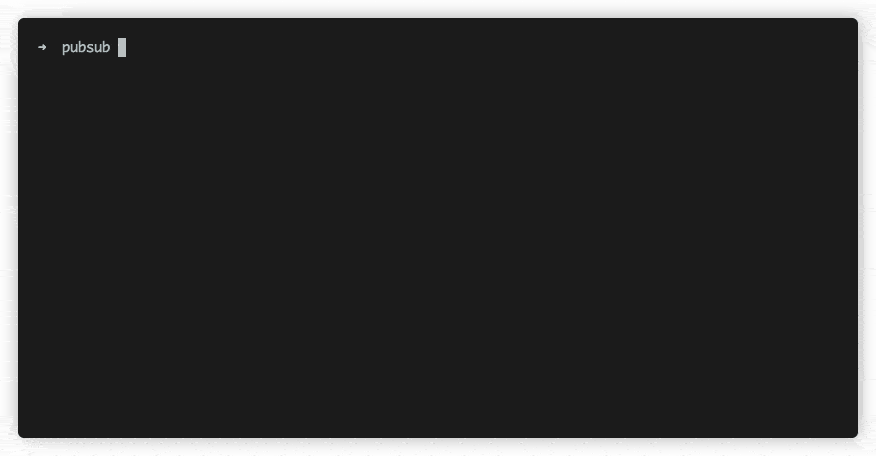

Google Pub/Sub Node.js Framework


This package contains a lightweight framework and subscription server for Google Pub/Sub. It was created to speed up development time and it provides a common foundation for building event driven applications. It lets developers define topics and subscriptions simply and declaratively, while additionally offering a simple subscription server to run all of a project's subscription handlers.

Table of Contents
Features
- Run all of your subscriptions at once with a subscription server
- Define pub/sub subscriptions and topics in a declarative way
- Define your subscription handlers with a simple object
- Get started quickly: define a topic and publish messages with a few lines of code
Getting started
The framework expects that you've created a pubsub directory in your project with the following structure:
| .env <-- this should be in your project root directory | - pubsub/ <-- this can be anywhere (defined in .env as PUBSUB_ROOT_DIR) | | - subscriptions/ | | - topics/
- Once the directory structure has been defined, environment variables should be set.
- Then you can create subscriptions and topics
- After a subscription has been created, use the CLI to start the subscriptions server.
- Initialize your database connection, define project-level subscription defaults, and register subscriptions in the Subscription Service.
Required Environment Variables
The framework expects the following environment variables. They can be added the .env file.
GOOGLE_APPLICATION_CREDENTIALS=/path/to/gcp-project-83d5537a8388-key.json
GOOGLE_CLOUD_PUB_SUB_PROJECT_ID=gcp-project-id
PUBSUB_ROOT_DIR=/path/to/your/pubsub/directory # this can be a relative path
| Variable/CLI args | Description |
|---|---|
PUBSUB_ROOT_DIR / root-dir |
must be the path to your project's pubsub directory. This module only works with .js files, so if you are writing your code in typescript, you must set this variable to the pubsub directory in your project's build directory. |
GOOGLE_APPLICATION_CREDENTIALS / google-application-credentials |
see https://cloud.google.com/docs/authentication/getting-started#creating_a_service_account to generate this |
GOOGLE_CLOUD_PUB_SUB_PROJECT_ID / project-id |
name of the project in Google Cloud Platform |
PROJECT_NUMBER (Optional)/ project-number |
Project for binding DLQ roles. Check Binding Subscriber and Publisher role for more details. If Not provided GOOGLE_CLOUD_PUB_SUB_PROJECT_ID is used to fetch the PROJECT_NUMBER |
CLI commands - starting and listing subscriptions
Prerequisites: Install npx if you don't have it installed yet: npm i -g npx
| Command | Description |
|---|---|
npx subscriptions start |
starts project subscriptions |
npx subscriptions list |
lists project subscriptions |
Alternatively the CLI can be found at
./node_modules/.bin/subscriptions
To pass env variables through CLI refer the cli args Example:
npx subscriptions list --root-dir="./examples/typescript"
Usage with Typescript
For use with Typescript, update your local PUBSUB_ROOT_DIR env var to the src directory of the project with the typescript files.
And instead of using npx subscriptions start you can invoke the bin script with ts-node:
npx ts-node ./node_modules/.bin/subscriptions start
If you have a separate tsconfig for your server code then you should pass it to ts-node:
npx ts-node --project tsconfig.server.json ./node_modules/.bin/subscriptions start
To make this easier you can add a script in your package.json:
{
"scripts": {
"pubsub": "ts-node ./node_modules/.bin/subscriptions start"
}
}
Use Debugger with Typescript
ts-node doesn't have an --inspect option unlike the node cli. But we can still pass it to the node process by way of the NODE_OPTIONS env var.
NODE_OPTIONS='--inspect' ts-node --project tsconfig.server.json ./node_modules/.bin/subscriptions start
Watch Mode with Typescript
You can use nodemon in combination with ts-node to develop in watch mode:
{
"scripts": {
"pubsub": "nodemon --exec \"NODE_OPTIONS='--inspect' ts-node --project tsconfig.server.json ./node_modules/.bin/subscriptions start\""
}
}
Topics
Create a topic in PUBSUB_ROOT_DIR/topics which extends Topic and a payload which extends BasePayload
// PUBSUB_ROOT_DIR/topics/simple.topic.name.ts
import { Topic, Payload as BasePayload } from '@honestfoodcompany/pubsub';
export default class SimpleTopic extends Topic {
readonly name = 'simple.topic.name';
}
export interface Payload extends BasePayload {
id: number;
data: string;
}
As a convention, the name of the topic file should match the name of the topic name so the file directory becomes self-documenting.
Publishing a message (simple example)
If a topic does not exist, it will be created before a message is published.
Typescript example
// client.example.ts
import SimpleTopic, { Payload } from 'PUBSUB_ROOT_DIR/topics/simple.topic.name';
new SimpleTopic().publish<Payload>({ id: 1, data: 'My first message' });
Javascript example
// client.example.ts
import SimpleTopic from 'PUBSUB_ROOT_DIR/topics/simple.topic.name';
new SimpleTopic().publish({ id: 1, data: 'My first message' });
Publishing a message with retry settings
NOTE: This may not work right now
see Sample Topic with Retry Settings for defining a default retry policy
// client.example.ts
import SimpleTopic, { Payload } from 'pubsub/topics/simple.topic.name';
let topic = new SimpleTopic();
topic.publish<Payload>(
{ id: 1, data: 'My first message' },
{
retryCodes: [10, 1],
backoffSettings: {
initialRetryDelayMillis: 100,
},
},
);
Publishing on a different GCP project
see Sample Topic using its own GCP Project
Publishing with Attributes
See: https://cloud.google.com/pubsub/docs/publisher#using_attributes
// client.example.ts
import SimpleTopic, { Payload } from 'pubsub/topics/simple.topic.name';
let topic = new SimpleTopic();
topic.publish<Payload>(
{ id: 1, data: 'My first message' },
{
attributes: {
filter: 'a',
company: 'b',
status: 'failed',
},
},
);
These attributes can then be used to filter messages using the filter option in Subscription Options.
Subscriptions
Create a Subscriber to define a message handler for messages that are published on the corresponding topic.
Subscribers are contained in PUBSUB_ROOT_DIR/subscriptions.
Files ending in
.sub.jsinPUBSUB_ROOT_DIR/subscriptionswill be autoloaded by the subscription server.
Typescript subscription example
// PUBSUB_ROOT_DIR/subscriptions/simple.topic.name.console-log.sub.ts
import { SubscriberObject, Message } from "@honestfoodcompany/pubsub"; // this import is optional, it's gives us the interfaces to use below
export default: SubscriberObject = {
topicName: 'simple.topic',
subscriptionName: 'simple.topic.console-log.sub',
description: 'Will console log messages published on test.topic',
handleMessage: function(message: Message): void {
console.log(this.subscriptionName, 'received message');
console.log(message.data.toString());
message.ack();
},
};
Javascript subscription example
// PUBSUB_ROOT_DIR/subscriptions/simple.topic.name.sub.js
exports.default = {
topicName: 'test.topic',
subscriptionName: 'test.topic.sub',
description: 'Will console log messages published on test.topic',
handleMessage: function (message) {
console.log(this.subscriptionName, 'received message');
console.log(message.data.toString());
message.ack();
},
};
Subscription example with subscriber options
// PUBSUB_ROOT_DIR/subscriptions/simple.topic.name.subscription.js
exports.default = {
topicName: 'test.topic',
subscriptionName: 'test.topic.subscription',
description: 'Will console log messages published on test.topic',
options: {
flowControl: {
maxMessages: 500, // max messages in progress
},
},
handleMessage: function (message) {
console.log(`received a message on ${this.subscriptionName}`);
console.log(message.data.toString());
message.ack();
},
};
Subscription with a Dead-letter Policy
It is possible to define a dead-letter policy for a subscription. If the dead letter topic does not exist, it will be created automatically by the framework. There needs to be a PROJECT_NUMBER defined for dead letter to pick up publisher, subscriber role or we use the Project ID to fetch it. createDefaultSubscription will create a default dead letter subscription with name having .default added to deadLetterTopic. Check Binding Subscriber and Publisher role for more details
// PUBSUB_ROOT_DIR/subscriptions/simple.topic.sub.js
exports.default = {
topicName: 'test.topic',
subscriptionName: 'test.topic.sub',
description: 'Will console log messages published on test.topic',
options: {
deadLetterPolicy: {
deadLetterTopic: 'test.deadletter.topic',
maxDeliveryAttempts: 15,
createDefaultSubscription: true,
},
},
handleMessage: function (message) {
console.log(`received a message on ${this.subscriptionName}`);
console.log(message.data.toString());
},
};
Binding Subscriber and Publisher role
To automatically have a Publisher,Subscriber role attached to your dead letters you need to add PROJECT_NUMBER in the env list. If this PROJECT_NUMBER isn't available in env then it'll use GOOGLE_CLOUD_PUB_SUB_PROJECT_ID to fetch it.
Binding the above policies don't require current subscriptions to be deleted.
To find out project number through CLI use the commands below:
PROJECT=$(gcloud config get-value project)gcloud projects list --filter="$PROJECT" --format="value(PROJECT_NUMBER)"
Subscription with Retry Policy
It is possible to define a retry configuration for a subscription:
// PUBSUB_ROOT_DIR/subscriptions/simple.topic.name.subscription.sub.js
exports.default = {
topicName: 'test.topic',
subscriptionName: 'test.topic.sub',
description: 'Will console log messages published on test.topic',
options: {
retryPolicy: {
minimumBackoff: { seconds: 20, nanos: 20 },
maximumBackoff: { seconds: 400, nanos: 2 },
},
},
handleMessage: function (message) {
console.log(`received a message on ${this.subscriptionName}`);
console.log(message.data.toString());
},
};
Subscription with Message Ordering
Messages published with the same ordering_key in PubsubMessage will be delivered to the subscribers in the order in which they are received by the Pub/Sub system.
// PUBSUB_ROOT_DIR/subscriptions/simple.topic.name.subscription.sub.js
exports.default = {
topicName: 'test.topic',
subscriptionName: 'test.topic.sub',
description: 'Will console log messages published on test.topic',
options: {
enableMessageOrdering: true,
},
handleMessage: function (message) {
console.log(`received a message on ${this.subscriptionName}`);
console.log(message.data.toString());
},
};
Subscriber Options
interface SubscriberOptions {
/**
* override the default project settings from the environment variable
* and use the project defined here instead for the subscription
**/
project?: {
id: string;
credentials: {
client_email?: string;
private_key?: string;
};
};
/**
* in seconds
**/
ackDeadline?: number;
batching?: {
callOptions?: CallOptions; // see https://github.com/googleapis/gax-nodejs/blob/77f16fd2ac2f1bd90cc6abfcccafa94a20582017/src/gax.ts#L114
maxMessages?: number;
maxMilliseconds?: number;
};
flowControl?: {
allowExcessMessages?: boolean;
maxBytes?: number;
maxExtension?: number;
maxMessages?: number;
};
streamingOptions?: {
highWaterMark?: number;
maxStreams?: number;
timeout?: number;
};
deadLetterPolicy?: {
deadLetterTopic: string;
maxDeliveryAttempts: number;
};
retryPolicy?: {
minimumBackoff: { seconds: number; nanos?: number }; // "10s"-"599s"
maximumBackoff: { seconds: number; nanos?: number }; // "11s"-"600s"
};
/**
* An expression written in the Pub/Sub [filter
* language](https://cloud.google.com/pubsub/docs/filtering). If non-empty,
* then only `PubsubMessage`s whose `attributes` field matches the filter are
* delivered on this subscription. If empty, then no messages are filtered
* out.
* */
filter?: string;
/**
* If true, messages published with the same `ordering_key` in `PubsubMessage`
* will be delivered to the subscribers in the order in which they
* are received by the Pub/Sub system. Otherwise, they may be delivered in
* any order.
*/
enableMessageOrdering?: boolean;
}
Subscription Service
Extend and customize the behavior of the subscription server in the subscription service file. Initialize a database connection, register subscribers, and define default subscriber options in the subscription service file.
Typescript example
// PUBSUB_ROOT_DIR/subscription.service.ts
import * as PubSub from '@honestfoodcompany/pubsub';
import { SubscriberOptions } from '@honestfoodcompany/pubsub';
/**
* This function call is optional, you can pass an instance of Pino, Winston logger
* By default it uses default console.* for logging
* The logger you pass must support .error, .info and .warn methods for it to work
*/
PubSub.setLogger(console);
export default class SubscriptionService extends PubSub.SubscriptionService {
static subscribers = [
/**
* if your subscribers don't have the .sub.js suffix
* they won't be auto-loaded, so you can include their default
* export in this array
*/
];
static defaultSubscriberOptions: SubscriberOptions = {
/**
* Define project level default subscriber options here.
* These options can be overridden by options defined in subscribers
*/
};
static async init(): Promise<void> {
/**
* This function is called when the subscription server starts.
* This is a good place to initialize a database connection
*/
}
}
Javascript Example
// PUBSUB_ROOT_DIR/subscription.service.js
const PubSub = require('@honestfoodcompany/pubsub');
class SubscriptionService extends PubSub.SubscriptionService {}
SubscriptionService.subscribers = [
/**
* if your subscribers don't have the .sub.js suffix
* they won't be auto-loaded, so you can include their default
* export in this array
*/
];
SubscriptionService.defaultSubscriberOptions = {
/**
* Define project-level default subscriber options here.
* These options can be overridden by options defined in subscribers
*/
};
SubscriptionService.init = () => {
/**
* This function is called when the subscription server starts.
* This is a good place to initialize a database connection
*/
};
exports.default = SubscriptionService;
Passing a custom Logger
In the main SubscriptionService before defining subscription class you can update the logger that is being used by the package for logging. It's an optional definition and by default it uses console.* for logging .info, .warn and .error these 3 function keys are a must have for the logger you pass.
import { setLogger } from '@honestfoodcompany/pubsub';
setLogger(console);
const { setLogger } = require('@honestfoodcompany/pubsub');
setLogger(console);
Connecting to a database
It is recommended to initialize a database connection in the subscription.service file in your PUBSUB_ROOT_DIR. Insert your database connection logic in the init method.
see: Subscription Service for more details
Graceful Shutdown
When gracefully shutting down a process, it is a good idea to first close all open subscriptions. For this reason we have a static closeAll method in the SubscriptionService that can close all connections before shutting down. An example using it with process signal handlers:
// PUBSUB_ROOT_DIR/subscription.service.js
import * as PubSub from '@honestfoodcompany/pubsub';
import mongoose from 'mongoose';
import { SubscriberOptions } from '@honestfoodcompany/pubsub';
export default class SubscriptionService extends PubSub.SubscriptionService {
static subscribers = [
/**
* if your subscribers don't have the .sub.js suffix
* they won't be auto-loaded, so you can include their default
* export in this array
*/
];
/**
* This function is called when the subscription server starts.
*/
static async init(): Promise<void> {
/**
* This is a good place to initialize a database connection
*/
await mongoose.connect();
}
}
/**
* Example setting up graceful shutdown
*/
process.on('SIGTERM', () => {
// First close all subscriptions
SubscriptionService.closeAll()
.then(() => {
// Then the databse so no new handlers are triggered
mongoose.disconnect(() => {
process.exit(0);
});
})
.catch((err) => {
console.error(err, 'Could not close subscriptions');
process.exit(1); // Exit with error
});
});
Enabling Synchronous Driver
If you would like to bypass Google PubSub and run your subscriptions synchronously (for development purposes) set the following environment variable:
PUBSUB_DRIVER=synchronous
Enabling gRPC C++ bindings
NOTE: DEPRECATED
The native grpc module has been deprecated and we would be removing this option in the future.
For some workflows and environments it might make sense to use the C++ gRPC implementation, instead of the default one. To configure the module to use an alternative grpc transport use the following environment variable:
PUBSUB_USE_GRPC=true